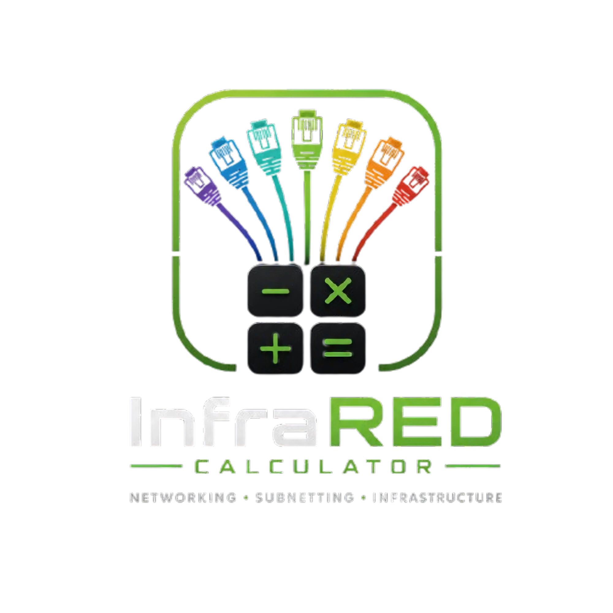

Aprendiz: Julian Esteban Pinto Rincon
Institución: SENA – Centro Industrial De Mantenimiento Y Manufactura (CIMM)
Programa: Tecnólogo En Implementación De Infraestructura De Tecnologías De La Información Y Las Comunicaciones.
Instructora: Gloria Mireya Rincón
Año: 2026
Esta calculadora está diseñada exclusivamente para redes de Clase C, es decir, aquellas cuya dirección IP inicia en el rango 192.0.0.0 a 223.255.255.0 con máscara base /24 (255.255.255.0). No es compatible con Clase A (1–126.x.x.x) ni Clase B (128–191.x.x.x).
Aprende a usar InfraRED Calculator en menos de 2 minutos
Escribe una dirección IP Clase C base como 192.168.10.0 en el primer campo.
Selecciona si conoces el número de Equipos o de Subredes que necesitas.
Escribe el número requerido (p.ej. 24 equipos o 4 subredes).
Presiona el botón "Ejecutar Cálculo InfraRED" para obtener los resultados.
Revisa la tabla de rangos, el procedimiento SENA y guarda o imprime tu reporte.
IP base + modo + cantidad requerida
Busca 2^n que cumpla el requisito
Calcula bits de red y de host del 4° octeto
Convierte bits a decimal por tabla de pesos
Genera rangos con salto = 2^bitsHost
Una herramienta educativa diseñada para el proceso formativo SENA — GFPI-F-135
Aplica el método GFPI-F-135 del SENA para calcular subredes a partir de hosts requeridos o viceversa.
Muestra cada paso matemático con potencias de 2, bits prestados y conversión a decimal.
Representa gráficamente el cuarto octeto de la máscara distinguiendo bits de red y host.
Genera toda la tabla con ID de red, primer/último útil, broadcast y estado de cada subred.
Produce un informe técnico formal listo para entregar como evidencia formativa.
Guarda todos los ejercicios realizados en el navegador para consultar o recargar en cualquier momento.
Todo lo que necesitas saber antes de empezar
ANATOMÍA DE UNA DIRECCIÓN IPv4
En Clase C, los primeros 3 octetos identifican la red y el último octeto identifica el equipo (host).
192.168.1.25. Similar a la dirección postal de una casa.
IPv4 · 32 bits · 4 octetos
255.255.255.0 (/24). Con subnetting cambia el último octeto: ej. 255.255.255.192 (/26).
/24 → /25 → /26 → /27…
2^h − 2, restando la ID de red y el broadcast.
Fórmula: 2^h − 2
192.168.1.0/26 el broadcast es 192.168.1.63.
No asignable · Último de la subred
192.168.1.0/26 el ID de red es 192.168.1.0.
No asignable · Primera dirección
Casos reales en empresas y redes TIC
Una escuela con 3 pisos necesita separar la red de administración, la de estudiantes y la de docentes. Con subnetting, cada área tiene su propia subred y no pueden acceder entre sí sin autorización.
Seguridad por segmentoLos equipos médicos críticos (monitores, ECG, rayos X) deben estar en una subred separada e independiente de la red WiFi de pacientes para garantizar disponibilidad y seguridad de los datos.
Disponibilidad críticaUna planta tiene subred de producción (PLCs, sensores), subred de oficinas y subred de cámaras IP. Cada una con máscara diferente según el número de equipos que la necesita.
Optimización de IPsSubred para huéspedes WiFi (muchos hosts), subred para gestión hotelera (PMS, cámaras, llaves digitales) y subred para restaurante/cocina con TPVs y tablets.
Segmentación por servicioUna alcaldía separa la red ciudadana (quioscos de acceso público) de la red administrativa interna donde se procesan datos sensibles de la comunidad.
Privacidad de datosUn proveedor de internet asigna bloques de IPs de Clase C a sus clientes empresariales usando subnetting para aprovechar al máximo el espacio de direccionamiento disponible.
Gestión de IPsMétodo GFPI-F-135 SENA — paso a paso con procedimiento completo
Nivel: Básico · Clase C · Modo Equipos
24 + 2 = 26
2¹=2 · 2²=4 · 2³=8 · 2⁴=16 · 2⁵=32 ✅8 − 5 = 3 bits prestados
/24 + 3 = /27
128 + 64 + 32 = 224255.255.255.224
2³ = 8 subredes creadas, con 2⁵ − 2 = 30 hosts útiles por subred.
2⁵ = 32 → Cada subred ocupa un bloque de 32 direcciones.
| # | ID de Red | Primer Útil | Último Útil | Broadcast | Estado |
|---|---|---|---|---|---|
| 1 | 192.168.10.0 | 192.168.10.1 | 192.168.10.30 | 192.168.10.31 | En Uso |
| 2 | 192.168.10.32 | 192.168.10.33 | 192.168.10.62 | 192.168.10.63 | En Uso |
| 3 | 192.168.10.64 | 192.168.10.65 | 192.168.10.94 | 192.168.10.95 | En Uso |
| 4 | 192.168.10.96 | 192.168.10.97 | 192.168.10.126 | 192.168.10.127 | En Uso |
| 5–8 | …continúa hasta 192.168.10.255 | Más subredes | |||
Nivel: Intermedio · Clase C · Modo Subredes
2⁰=1 · 2¹=2 · 2²=4 ✅/24 + 2 = /26
8 − 2 = 6 bits de host
2⁶ − 2 = 64 − 2 = 62 hosts útiles
128 + 64 = 192255.255.255.192
2⁶ = 64 → bloques de 64 direcciones.
| # | Departamento | ID de Red | Primer Útil | Último Útil | Broadcast |
|---|---|---|---|---|---|
| 1 | Ventas | 192.168.50.0 | 192.168.50.1 | 192.168.50.62 | 192.168.50.63 |
| 2 | TI | 192.168.50.64 | 192.168.50.65 | 192.168.50.126 | 192.168.50.127 |
| 3 | RRHH | 192.168.50.128 | 192.168.50.129 | 192.168.50.190 | 192.168.50.191 |
| 4 | Gerencia | 192.168.50.192 | 192.168.50.193 | 192.168.50.254 | 192.168.50.255 |
Qué significa cada columna y cada dato generado
Índice secuencial de cada subred generada. Comienza en 1. El total es igual a 2^(bits prestados).
Primera dirección de la subred. Identifica a la subred en enrutadores. No se asigna a equipos.
Ej: 192.168.1.0 → es el nombre de la subredPrimera dirección IP asignable a un equipo. Es ID de Red + 1.
Ej: 192.168.1.0 + 1 = 192.168.1.1Última dirección IP asignable a un equipo. Es Broadcast − 1.
Ej: 192.168.1.63 − 1 = 192.168.1.62Última dirección de la subred. Reservada para enviar mensajes a todos los hosts de esa subred. No se asigna a equipos.
Ej: 192.168.1.63 → broadcast de /26"En Uso": Subred que satisface el requerimiento.
"Reserva Libre": Subred adicional creada por matemática binaria pero no solicitada.
Ingresas la IP Base (ej. 192.168.10.0). El sistema detecta que es Clase C y bloquea los primeros 3 octetos. Luego eliges si necesitas dividir por Equipos (Hosts) o por Subredes.
Si buscas Equipos, el sistema suma +2 al requerimiento y busca la potencia de 2 que sea igual o superior (2^h >= Hosts + 2).
Si buscas Subredes, el sistema busca directamente la potencia de 2 igual o superior (2^n = Subredes) para hallar los bits prestados.
Usamos la tabla de pesos clásica del cuarto octeto: 128 | 64 | 32 | 16 | 8 | 4 | 2 | 1. La calculadora suma los valores de los bits prestados para calcular el nuevo prefijo y la máscara final.
Calcula el tamaño del salto de red elevando 2 a los bits de host libres. Con este número construye la tabla clasificando automáticamente qué redes están en uso y cuáles quedan de reserva libre.